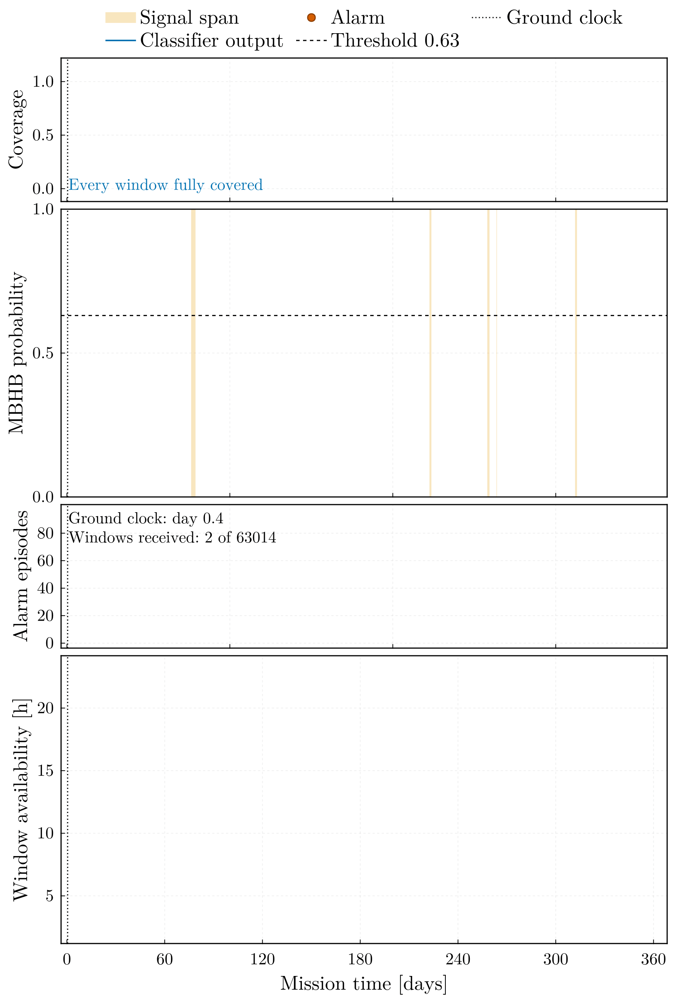

Telemetry coupling
Overview
The classifier is coupled to the telemetry producer through files in both directions; neither package loads the other.
- Upstream (this package to the producer). The payload-export stage writes the A channel of an HDF5 TDI product as a single-column CSV and a scenario fragment beside it. The producer's external-data mode reads the CSV gaplessly into segments and batches according to the fragment (
[physics] data_source = "external",external_data_path,sample_rate,segment_duration_sec,batch_size), stamps the mission clock from[simulation] start_sim_time, and carries the coalescence markers ([[events.markers]], each atimeand alabel) into its own event stream. - Downstream (the producer to this package). The producer emits a run directory of batches; the replay stage of this package follows that directory, reassembles the sliding windows as batches arrive, scores them with a trained model, and raises alerts.
The two halves share one time base, fixed by the fragment: payload row $r$ is the sample at start_sim_time $+ (r - 1)/f_s$. Every quantity the producer or the replay reports in mission time maps back to a payload row, and through the row to the sample of the original product and to the point-wise labels.
Payload export
export_telemetry_payload(config; h5_file, tdi_group, catalog, output_prefix) (script scripts/export_telemetry_payload.jl) reads the Michelson variables of the product (read_tdi), forms $A = (Z - X)/\sqrt{2}$ (tdi_to_aet), and writes under the [paths] inputs root:
<output_prefix>_payload.csv— one columnAmplitude, single precision, one row per sample; the file the producer ingests.<output_prefix>_scenario.toml— the fragment:[physics](data_source = "external",external_data_pathrelative to the package root,sample_rate$= 1/\Delta t$ of the file,segment_duration_sec,batch_size);[simulation](start_sim_time);[[events.markers]]from the event catalogue when one is given, one entry{time, label = "mbhb_<id>"}per event, the time beingstart_sim_timeplus the coalescence time measured from the first record sample, rounded to the millisecond;[[labels]]with thelabel_start_index/label_end_indexspan of every event when the catalogue carries these columns (the simulator catalogue always does; the LDC event table does forlabel_span = "fixed"), so that the point-wise labels can be rebuilt on the consumer side;[payload](source, group, row count, catalog, rows per batch, number of complete batches); and the git and hardware provenance every snapshot carries.
The catalogue is either the simulator's <stem>_events.csv (columns event_id, t_c_sec) or the LDC event table of the labelling stage (event, merger_time_s). A catalogue whose coalescences fall outside the record, or whose label spans exceed it, is rejected as not belonging to the product.
Time base. With sampling frequency $f_s$ and mission start $t_0$ = start_sim_time,
\[\text{row } r \;\leftrightarrow\; t_0 + \frac{r - 1}{f_s}, \qquad \text{batch } k \;\leftrightarrow\; \text{rows } [(k - 1)P + 1,\; kP], \qquad P = f_s \, T_\mathrm{seg} \, B,\]
where $T_\mathrm{seg}$ is segment_duration_sec and $B$ is batch_size. A segment must hold a whole number of samples ($f_s T_\mathrm{seg} \in \mathbb{N}$), the record must hold at least one full batch ($n_\mathrm{rows} \ge P$), and the stage refuses to start otherwise; samples_per_batch(sample_rate, segment_duration_sec, batch_size) evaluates $P$.
Default geometry. At $f_s = 0.2$ Hz the defaults $T_\mathrm{seg} = 50$ s and $B = 10$ give $P = 100$ rows per batch, which is exactly the window step of the pre-processor ([preprocessing] step_size = 100): every batch advances the sliding window by one step, a window of 1000 samples spans ten consecutive batches, and the $k$-th window of the feature table becomes evaluable when batch $k + 9$ has arrived. The marker of an event coalescing at row $r_c$ falls in batch $\lceil r_c / P \rceil$.
Configuration. The [telemetry] section holds segment_duration_sec (> 0, default 50), batch_size (>= 1, default 10), start_sim_time (ISO-8601 date-time string, default "2035-01-01T00:00:00"), and output_prefix (default "telemetry"); the product and group default to [preprocessing] h5_file and tdi_group.
julia scripts/export_telemetry_payload.jl configs/default.toml \
--h5-file data/inputs/simulated_telemetry_complex.h5 \
--catalog data/inputs/simulated_telemetry_complex_events.csv \
--output-prefix telemetry_simReplay and alerts
The consumer never writes into a producer run directory; it reads it through the producer's own API in the package extension that loads with DeepSpaceTelemetry.jl (open_telemetry_run), so that a change of the run-directory contract surfaces as a version bump — checked against [telemetry] producer_compat — or an API error rather than as silent format drift. The run exposes its geometry (run_geometry: sampling rate, segment length, batch size, samples per batch, mission epoch, producer version), its batches (list_batches: delivered, lost, or pruned, each with the payload rows it covers, taken from the content epoch the producer stamps on the batch rather than from its stored index, since the two differ once the producer discards production, and list_batches warns when they do), the payload of a delivered batch (read_batch), the arrival feed in mission-time order (arrival_events), and the lifecycle state (run_state).
Replaying the feed (replay_run) maintains the coverage of delivered rows as a set of disjoint intervals (Coverage), so that the order of arrivals — live batches first, then the archive backfilled newest-first — does not matter; a lost or pruned batch is a permanent hole, widened by tdi_gap_dilation_sec on each side, that later arrivals never fill. Whenever a batch arrives, the windows whose conditioning stretch — their own rows widened by context_windows window lengths on each side and cut to the record — is now delivered to at least min_coverage, and whose own rows are all delivered, are scored once (WindowScheduler, conditioning_rows), at the mission time of the arrival that completed that stretch; a hole inside a window is never scored across. The score comes from the same conditioning as the batch pipeline: the delivered stretch around the window — up to context_windows window lengths on each side — is high-passed and whitened, and the window is cut from it (StreamingDetector, built by detector_from_run from the model artifact, its threshold, and the sidecar of the feature table it was trained on). Under psd_mode = "sidecar" the whitening PSD is fixed: that of the feature sidecar psd_sidecar when one is configured, and the PSD persisted with the training run otherwise. In the benchmark the sidecar supplies the full-record PSD of the blind year, the median Welch estimate of the entire blind year, which is available only after the whole record has been received. Under psd_mode = "trailing" the whitening PSD is instead the causal PSD estimate of TrailingWelch: the median Welch spectrum of every delivered run inside the last psd_trailing_days behind the window's conditioning stretch, each run high-passed as every stretch is, trimmed by psd_edge_periods cutoff periods at both ends where the high-pass rings, and the segments of all runs pooled so that none spans a delivery hole — redone whenever that record has advanced by psd_refresh_days, kept from the previous estimate while no run holds a segment (psd_segment_length), and replaced by the training run's own PSD only before any estimate exists. The estimate is causal in that only data already delivered to the ground station enter it, unlike a sidecar PSD of a whole record, which for a streamed mission includes data not yet delivered; the scored-window table records the last row behind each estimate (psd_row, 0 for the static PSD). The first windows of a record, and any isolated window, are scored on shorter context and are edge-affected, as in the batch pipeline.
Both settings must be chosen for the record being scored rather than left at their defaults. A whitening PSD calibrates the record being scored: whitening one observation record with the PSD estimated from another mis-scales every band power wherever the noise is not stationary between them, and the annually modulated Galactic foreground makes that the normal case rather than the exceptional one; on the Sangria blind year, whitening with the training run's own PSD removes every detection. context_windows has to reach past the conditioning kernel, which decays as a power law rather than exponentially whenever the whitening PSD resolves sharp spectral features such as the TDI transfer nulls; with the Sangria Welch estimate the streamed scores match the batch pipeline only from about twenty window lengths of context upward, and not monotonically below that, so the agreement has to be measured rather than assumed. The look-ahead is a property of the filter, not a tuning choice: the whitening is zero-phase, so a window's conditioned features depend on the data after it as much as on the data before it, and a detector that scores each window as soon as its own samples are delivered detects two of the five Sangria blind events where a centred stretch detects all five; sixty-four window lengths of past context do not remove this deficit. An alert therefore carries a conditioning lag of context_windows window lengths, 1.16 days at the Sangria settings, on top of the ground segment's delivery latency.
The table of scored windows records, per window, its rows and their mission times, the completing arrival and its time, the coverage, the score, the decision, and the inference wall time; windows beyond the rows of the ingested payload (which the producer records in its snapshot and pads with zeros afterwards) are not scored. alert_latency_table reduces it per event of an event table (merger_time_s or the simulator's t_c_sec, optional label spans): the earliest alert touching the event's label span, where an alert is a run of alert_persistence consecutive alarmed windows — consecutive in window index, irrespective of arrival order — raised by the arrival that completes the run (with a persistence of one, every alarmed window is an alert); its completion time as the alert time, the data latency (alert time minus merger time — negative when the inspiral is alarmed inside the label span before the coalescence), the total latency with the processing_latency_hours budget, whether the event was detected, and the runs of alarmed windows outside every span that reach the persistence as false-alarm episodes per 30 days of scored data; shorter runs raise no alert and are not counted. One alert can touch two events whose spans overlap; the table reports it for both, and the benchmark page counts such an event as not detected on its own. In live mode (follow_run, [telemetry] mode = "live" or --live), the feed is polled every poll_interval_sec and consumed beyond the events already processed until the run reaches a terminal sentinel and the feed is drained; the two modes share the same state machine (process_event!) and give identical tables.
The figure figure_telemetry_alerts stacks the score trace with the threshold, the alarmed windows, and the labelled spans over the ground-availability latency of every window, with the alert latency of each detected event annotated. The coupling excludes delivery holes from scoring rather than scoring across them, follows a producer that discarded production (the rows a batch holds come from its content epoch, not its index), and pools the causal PSD estimate over the delivered runs around the holes; no masked or Lomb–Scargle features are implemented. The effect of the exclusion is measured on the benchmark page over seventeen missions: scattered permanent loss above about 0.2 % of batches removes most of the scorable record, a threshold set by the length of the conditioning stretch rather than by the loss rate, whereas bursts, retransmission, outages and gaps in the data itself remove a fraction of that.
animate_mission_replay sweeps the same replay across four panels in the order the ground received the windows. The dotted rule is the ground clock, and its distance from the edge of the data is the delivery latency itself.

Testing
The unit tests exercise the consumer on an in-memory run (MemoryTelemetryRun): geometry, coverage algebra under out-of-order arrival, window scheduling, erosion of a lost batch, replay against a direct evaluation on the delivered stretch, live-mode drainage, and the alert table. The integration test runs a one-day DeepSpaceTelemetry mission at 0.2 Hz on an exported payload in a temporary run root (the producer's DATA_ROOT redirected) and replays it through the extension, so a producer upgrade is checked by the suite itself. DeepSpaceTelemetry.jl is a pinned git source of the script and test environments and a weak dependency of the package.